📁 Процесс настройки, загрузки файлов и работа с Git
Что происходит: Ниже представлены вспомогательные скриншоты: список файлов задания, инициализация Git-репозитория, клонирование на сервер.
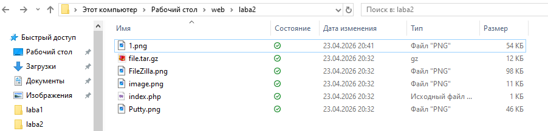
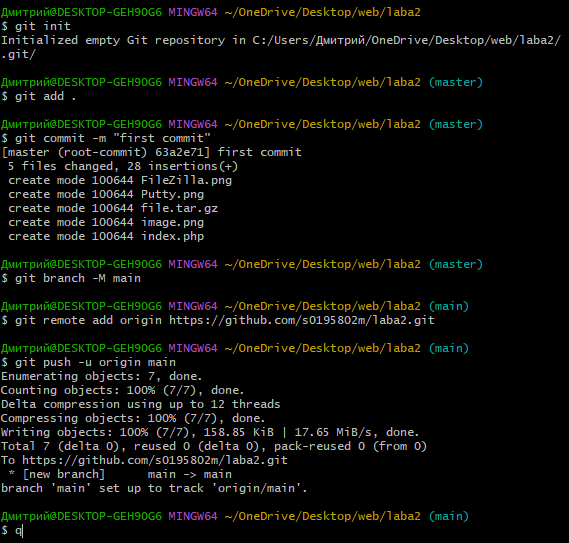
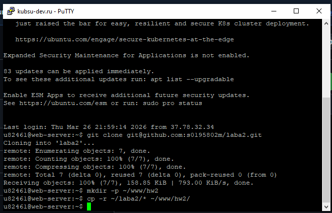
1️⃣ Получение главной страницы методом GET в протоколе HTTP 1.0
Что происходит: Отправлен GET-запрос к корню сайта (/) с указанием протокола HTTP/1.0. Сервер отвечает кодом 200 OK, возвращает HTML-страницу и заголовки, включая дату, тип сервера и длину контента.
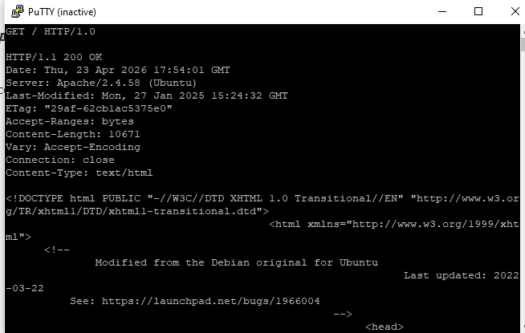
2️⃣ Получение внутренней страницы методом GET в протоколе HTTP 1.1
Что происходит: Отправлен GET-запрос к /hw2/index.php с протоколом HTTP/1.1 и заголовком Host. Сервер возвращает код 404 Not Found (так как файл обрабатывается PHP-скриптом) и выводит массив Array() и строку "Привет, мир!".
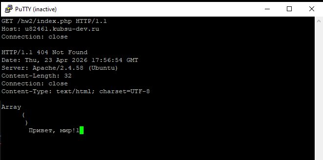
3️⃣ Определение размера файла file.tar.gz без его скачивания
Что происходит: Использован метод HEAD к файлу /hw2/file.tar.gz. В ответе сервер возвращает заголовок Content-Length: 11335 байт, который и является размером файла. Сам файл не передаётся.
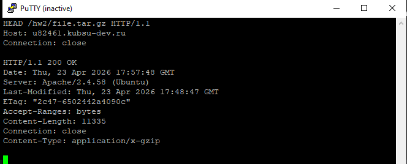
4️⃣ Определение медиатипа ресурса /image.png
Что происходит: Отправлен HEAD-запрос к /hw2/image.png. В ответе сервер указывает Content-Type: image/png, что и является медиатипом (MIME-типом) ресурса.
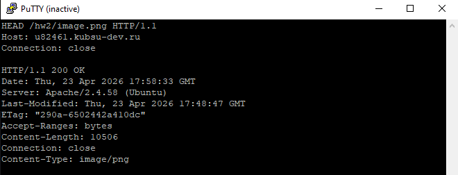
5️⃣ Отправка комментария на сервер по адресу /index.php (метод POST)
Что происходит: Отправлен POST-запрос на /hw2/index.php с телом comment=Hello. Указаны заголовки Content-Type: application/x-www-form-urlencoded и Content-Length: 14. Сервер отвечает массивом Array( [comment] => Hello ) и строкой "Привет, мир!".
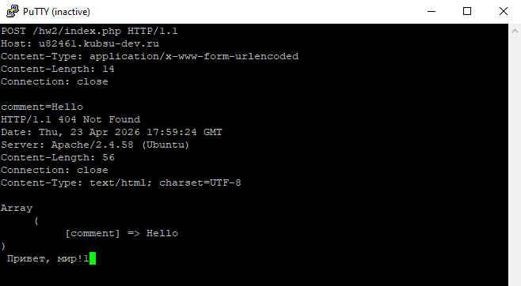
6️⃣ Получение первых 100 байт файла /file.tar.gz
Что происходит: Отправлен GET-запрос к /hw2/file.tar.gz с заголовком Range: bytes=0-99. Сервер возвращает код 206 Partial Content, заголовок Content-Range: bytes 0-99/11335 и сами первые 100 байт файла.
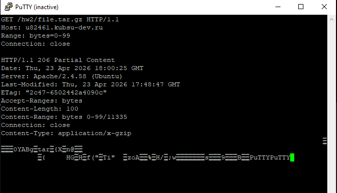
7️⃣ Определение кодировки ресурса /index.php
Что происходит: Отправлен HEAD-запрос к /hw2/index.php. В ответе сервер возвращает заголовок Content-Type: text/html; charset=UTF-8, что указывает на кодировку UTF-8.
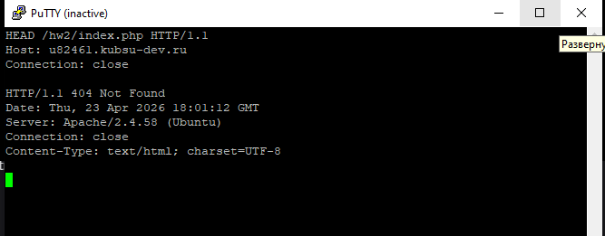
📁 Процесс настройки, загрузки файлов и работа с Git
Что происходит: загрузка на git, обновление файлов через git pull и копирование в каталог ~/www/hw2.
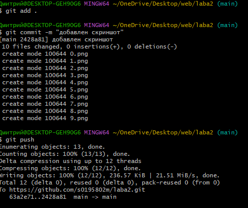
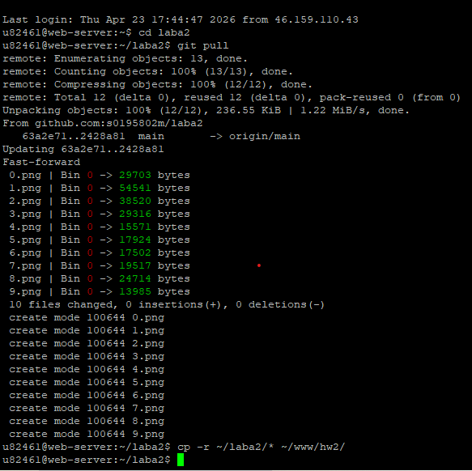